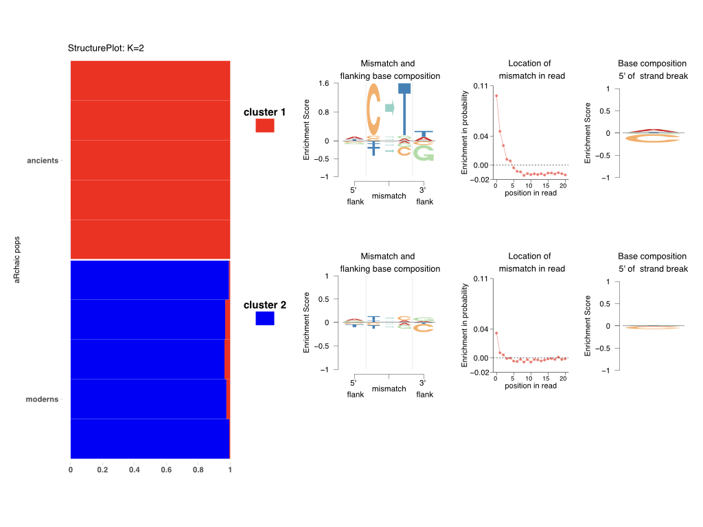

An R package for exploration, clustering and visualization of DNA damage patterns.

First and foremost, the user is required to install
And Python packages,
aRchaic requires R version to be 3.4 or greater. If your R version is lower than that, please upgrade.
Upon completion of these steps, start a new R session and install aRchaic:
install.packages("remotes")
remotes::install_github("kkdey/aRchaic")Now you should be able to load aRchaic into R.
library(aRchaic)Get started with a short tutorial here
Also users are welcome to contribute to the package by submitting pull request.
Al-Asadi, H., Dey, K., Novembre, J. and Stephens, M., 2018. Inference and visualization of DNA damage patterns using a grade of membership model. bioRxiv, p.327684.
Distributed under the terms of the GNU General Public License as published by the Free Software Foundation, either version 3 of the License, or (at your option) any later version.
The repository is distributed in the hope that it will be useful, but without any warranty; without even the implied warranty of merchantability or fitness for a particular purpose. Please see LICENSE for more details.